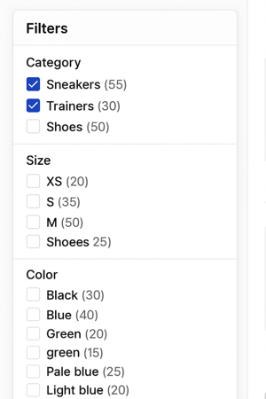
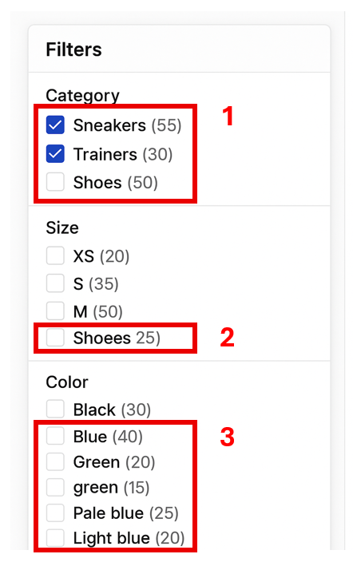
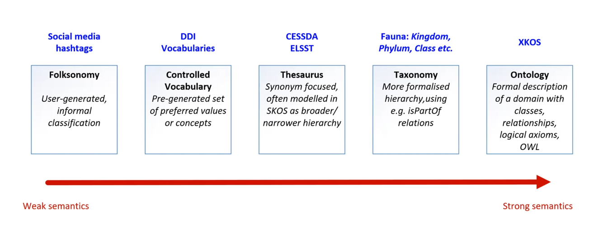

Unit 2.4 Controlled vocabularies
Unit overview
Unit study time
- 2 hours
Intended learning outcome
- Understand what controlled vocabularies are and their role in metadata creation
- Know how to find a relevant controlled vocabulary to use in metadata
- Gain a high-level understanding of theasuri, taxonomies and ontologies
Metadata management and best practice
As we explored in the last unit, metadata can be leveraged as a search and filter tool on data catalogues. This enables people to find data based on keywords, topics or dates. Through being machine actionable, metadata is a powerful form of documentation that provides more functionality than unstructured documentation.
In order to be machine actionable, computers need to be able to read metadata. Therefore, metadata must be structured and stored in appropriate, machine readable formats.
In unit 2.1 we touched on machine readable formats that metadata should be stored in. This includes CSV, XML and JSON. By being in these formats, machines can read metadata and action it. Metadata should not be stored in free-text formats such as PDF or MS Word, as computers will not be able to read and interpret this information.
However, just because machines can read metadata does not mean that metadata is automatically valuable as a discovery tool.
For example, look at the screenshot below that shows filters for a shopping site based on the object's metadata. Why are these filters not helpful? What could be the issues with the clothes' metadata that are causing problems with the filters?

Poor quality metadata
Duplicate terms, spelling errors, and wrongly placed categories create 'dirty' metadata which has limited use as a discovery tool. While machines can read dirty metadata, they can't action it correctly as the relationships between different objects are not correctly described by the metadata. This means you get search returns that confuse different items and mix different categories.

[1+2] Inconsistent or incorrect terms
A computer doesn’t know that 'Shoees' is probably just a typo for 'Shoes', instead it treats them as two totally separate categories. Same goes for different terms like 'Trainers' and 'Sneakers.” Even though they mean the same thing to us, the system sees them as unrelated, which means your search results could miss half the data unless you manually spot and fix it.
[2] Incorrect strucutre
'Shoees' is also placed in the 'Size' category meaning it's linked to 'XS, S, M, L'. This is because the strucutre of the metadata and the relationship between the terms is incorrect. So while the computer can read this metadata, it can't action it correctly which means our ability to use metadata as a disocovery tool is hindered.
[3] Vague and undefined metadata
Then there’s vague metadata like “light blue” vs. “pale blue.” Are they the same colour? Should they be grouped together? Without clear definitions, it’s hard to tell, and that can lead to confusion or missed connections.
Thinking back to the FAIR principles, dirty metadata makes it harder for metadata to be interoperable. The metadata can’t easily slot into data catalogues or repositories as they don't follow the specified structure. This means we can can't compare metadata for the study with other studies and we miss out on opportunites to re-use data and compare studies.
Impact of poor quality metadata
'Dirty' (poor quality) metadata...
- Hinders the searchability and discoverability of data as computers cannot read and interpret the metadata effectively
- Reduces the reliability and validity of data as uncorrected errors remain in the documentation
- Reduces the interoperability of the data as it is harder to identify and compare similar objects
- Makes research processes more time consuming as people have to identify what terms are relevant for their search and work around errors
'Dirty' metadata fails to effectively implement both the FAIR data principles and the main purpose of metadata: to increase the discovery, understanding and (re)usability of data.
Metadata best practice
To help us overcome these issues and ensure metadata is high-quality and follows best practice.
Best practice principles
Some best practice principles to consider include...
- Accurate descriptions that provide the appropriate level of information neccessary to understand a project
- Being consistent with the use of terms within a project's metadata to avoid confusion or misinformation
- Use standardised terms that are commonly used within the relevant discipline and are unlikely to become redunant
- Interoperability of metadata with other studies' so it can be compared across resources and deposited on centralised platforms such as data catalogues where it can be searched and filtered
Tools to implement best practice
Two main tools that are used implement metadata creation best practice are...
- Controlled vocabularies
- Metadata schemas and standards
In this unit, we will look at controlled vocabularies and the related concepts of theasuri, taxonomies and ontologies.
In the next unit (2.5), we will look at metadata schemas and standards.
[!NOTE] BO - is there a citation for this, or is this what we understand as best practice? It reads to me as if these are an established set of rules/principles, like FAIR. I also think the last three points are a bit vague - can they be expanded on? E.g. I wouldn't know what this means and how to action it if I was new to metadata/CVs/standards "Persistent use of terms that don't expire".
HM - what does Searchability of metadata so it can be used to discover data mean? - KR have changed this to a point around interoperability as I think that was the core point around being able to 'search' on data catalogues etc
Controlled vocabularies
What are controlled vocabularies?
CODATA defines controlled vocabularies as...
'List of standardised terminology, words, or phrases, used for indexing or content analysis and information retrieval, usually in a defined information domain.'
NBI Sweden defines them as...
'A controlled vocabulary is a list of terms that describes a certain domain of knowledge. In the controlled vocabulary you only use one term to describe one particular phenomenon, excluding all other synonyms.'[^1]
Simply, a controlled vocabulary provide a pre-defined list of input options for a metadata element. By restricting what information can be used, controlled vocabularies provide consistency and structure to metadata and reduces the risk of human errors and inconsistencies as explored above.
Creating your own restricted list of terms
You can create your own list of restricted terms for a metadata element. This means only those terms or values can be used. This can be considered a personal control vocabulary as you're only using it for your metadata needs. An individual might create a vocabulary or an organisation.
For example, for metadata describing colour, we could restrict the terms to..
- Green
- Blue
- Black
- Red
- Orange
- Yellow
- Purple
- Pink
- White
In the previous example, using this list would remove the issue of having confusing categories, 'pale blue' and 'light blue', and prevent the formatting error of 'Green' and 'green'. However, while we have restricted what information we can use, we don't necessarily know what the terms mean. As such, it's useful to provide definitions.
For example ...
- Blue
- An object that's dominant colour is blue (including light and dark shades). If blue is present but not the main color, classify the object under its dominant color.
If you're creating your own controlled vocabulary it's useful to have these definitions available in your documentation, so people can refer to them to understand your metadata. It also helps your future self when you come back to an old study, understanding how and why something was described in a certain way and what that description means.
Using a publicly available controlled vocabulary
There are publicly available controlled vocabularies that provide a pre-defined list of terms that relate to a specific discipline or area of knowledge. The vocabulary is created and updated by a relevant research community and are a type of community based standard.
The power of a controlled vocabulary increases when it becomes widely adopted, as it makes metadata using the same vocabulary interoperable. This means metadata can be integrated into centralised systems (such as data catalogues that we explored in unit 2.3) and we can easily compare across studies and resources. As such, it's best practise to use publicly avaliable controlled vocabularies where possible. It also means you don't have to create a vocabulary from scratch so it saves you time in your metadata creation.
For example, a country could be referred to in different ways ...
- America, United States, US
Or in different languages ...
- Germany, Deutschland, Allemagne
To standardise this infomration, we can use the publicly available controlled vocabulary ISO 3166-1 Alpha-2 Country Codes. The controlled vocabulary provides two-letter codes for every country which can be used across languages, allowing us to standardise how we refer to countries across different research projects
- US – United States
- DE – Germany
[!NOTE] JJ - There are two issues, one is it is good practice to use a restricted list of terms, which is made very well, I think we could say CVs in a research or statistical context which is where the community based standards should be emphasised, but we are using the terms interchanagly as they serve the same purpose, but that might be something to save for Foundational
KR I have added a senstence about controlled list of terms to separate that out to indicate how they can be used to aid metadata creation.
[^1]: https://nbisweden.github.io/module-metadata-dm-practices/guide/index.html). I think it gives a bit more depth than the CODATA definition which is this 'List of standardised terminology, words, or phrases, used for indexing or content analysis and information retrieval, usually in a defined information domain.'
Using a controlled vocabulary
Here is some metadata for a list of books. What columns do you think could benefit from using a controlled vocabulary? Why?
| Book title | Author | Original language | Language | Genre | Quantity |
|---|---|---|---|---|---|
| To Kill A Mockingbird | Harper Lee | English | eng | Fiction | 14 |
| On Social Contract | Rousseau, Jean-Jacques | french | english | Political non-fiction | 5 |
| The Odyessy | Homer | Ancient Greek | Greek | Poetry fiction | 9 |
| Lord Of The Flies | Golding, W. | English | en | Coming-of-age literature | 7 |
Where can we use a controlled vocabulary
We could apply a controlled vocabulary to the 'Original language', 'Language', and 'Genre' columns. This is because they will use similar or repeated terms that we need to ensure are standardised across our dataset.
As the book title and author column will contain unique data for each object and will continue to grow as new books are brought in, we can't use a controlled vocabulary. However, we can standardise how we write this information, for example, for 'Author' we could format the information as 'surname, firstname' or 'firstname surname' or 'firstname initial, surname' etc. You may use a metadata standard or schema as guidance on how to format these columns. We will explore this in the next unit 2.5 Metadata standards.
Looking at the data in those columns, what are some of the current issues?
Current issues in the book metadata
- Data is presented in different ways: _English, eng, en_
- Different levels of specficity of data in the genre column: _Fiction_ compared to _Coming-of-age literature_ and similar terms _Fiction_ and _Literature_ are used interchangeably with no further clarification
-
Controlled vocabularies provide a way to standardise these terms. The definitions for the terms have been widely agreed within a discipline and can save you time by referring directly to them rather than defining them yourself in your own documentation.
Applying a controlled vocabulary
Going back to the book example, we could use the following controlled vocabularies for the Language and Genre metadata fields.
- A widely adopted cross-disciplinary controlled vocabulary for language names is the ISO 639-1/639-3
-
ISO 639-1/639-3 specifies how to write languages in three letter codes e.g. English = eng, French = fra, Ancient Greek = grc, Modern Greek = ell
-
A domain-specific controlled vocabulary for labelling genres in library archiving is the Library of Congress Genre/Form Terms for Library and Archival Materials
| Book title | Author | Original language | Language | Genre | Quantity |
|---|---|---|---|---|---|
| To Kill A Mockingbird | Harper Lee | eng | eng | Legal fiction; Domestic fiction; Bildungsromans | 14 |
| On Social Contract | Jean-Jacques Rousseau | fra | eng | Political literature; Philosophical literature | 5 |
| The Odyessy | Homer | grc | ell | Epic poetry; Mythological fiction; Adventure fiction | 9 |
| Lord Of The Flies | William Golding | eng | eng | Allegories; Psychological fiction; Adventure fiction | 7 |
By standardising the metadata, we avoid confusion around inconsistent categories or different levels of information. Instead, we can compare the same type of metadata across different objects as the metadata is interoperable. This means we can deposit the metadata into a centralised platform, like a library catalogue, where machines can effectively read it in order to use the metadata as a search and filter tool.
In the metadata records, you can also reference which controlled vocabularies are used so other people looking at the metadata can reference the original vocabulary as a single source of truth for the definitions of the terms.
Controlled vocabularies for research metadata
Let's consider other common research metadata that we should use controlled vocabularies for.
Cross discipline
You may use cross discipline controlled vocabularies for the following research metadata...
- Countries
- For metadata that describes where the research was conducted
- Languages
- For metadata that describes that language the data is stored in
- File format
- For metadata that describes what format the data is stored in
- Access and copyright
- For metadata that describes a research project's access and copyright licenses
Discipline specific
You may use controlled vocabularies for discipline specific metadata such as...
- Metadata describing data collection methods or instruments e.g. Questionnaries, Surveys, Focus Groups
- Metadata describing specialised terms and/or categories e.g. disease names in life sciences
- Metadata describing subjects or concepts specific to your discipline
[!NOTE] BO - Can we provide examples for the last two bullet points? JJ lets remove the last two bullet points, introducing keywords is the opposite of a CV! and standardised scales is not an area wher they are widely used
How to find a controlled vocabulary
Once you identify what metadata you can apply a controlled vocabulary to, you need to find a relevant one to use.
Your research area or academic discipline may use and encourage certain controlled vocabularies. For example, if you had oceanographic data in the UK, you may want to use the Natural Environment Research Council (NERC) Vocabulary Server which lists all relevant controlled vocabularies for that field. The European Union also provide a list of controlled vocabularies for data and resources relating to their work and CESSDA have created a place a search controlled vocabularies relating to social science research here.
If you are storing your data in a repository or using a metadata standard or schema, they may specify certain controlled vocabularies to use and/or have produced controlled vocabularies as part of the standard (note, we will cover metadata standards in unit 2.5).
You can also find controlled vocabularies yourself, using websites such as Bartoc which compiles many different controlled vocabularies from different sources allowing you to search and filter across disciplines so you can find a relevant vocabulary.
When choosing a controlled vocabulary you should consider... - Uptake of the controlled vocabulary in your research field. If you find two controlled vocabularies that cover similar, it is usually best practice the one which is more widely used. THis - If you're using a metadata standard, it may specify which controlled vocabulary to use - If you're depositing your data and metadata in a repository and/or catalogue, they might specify which controlled vocabulary you should use
For example, say you're creating metadata for a social science study. You want to capture information about the analysis unit (the entity the study analyses) and describe the type of data you collected for each variable (e.g. whether it was string, integer, decimal, date-time etc.)
Using the Bartoc tool, can you identify controlled vocabularies you may want to use?
Controlled vocabularies you could use
If you search 'analysis unit', you see ... If you search 'type of data' into Bartoc you find ...
If you search 'type of data' into Bartoc you find ...
 Anaylsis unit and Data type are controlled vocabularies from DDI, a metadata standard for social science research which is widely used by the social science research community.
For example ...
Anaylsis unit and Data type are controlled vocabularies from DDI, a metadata standard for social science research which is widely used by the social science research community.
For example ...
| Metadata element | Data type | Analysis unit |
|---|---|---|
| Age | Positive integer | Individual |
| Gender | String | Individual |
| Household income | Decimal | Household |
Now try using Bartoc tool or another search site we have reference in this unit to find a controlled vocabulary that is relevant for your area of research.
Using a controlled vocabulary
If you're using a controlled vocabulary, you should reference it in your metadata so people can easily reach the definition for your term. You can do this by linking the term to the controlled vocabularly in your metadata for the dataset or resource, including it in your metadata schema (we will looking at metadata
For example ...
Including contolled vocabulary reference in your documentation
| Book title | Definition | Controlled vocabulary reference |
|---|---|---|
| Book title | Title of book as it appears on book cover | - |
| Author | Full name of author: Last name, First name | fra |
| Original language | Original language of first edition publication of book | ISO 639-1/639-3 |
| Language | Language of the book | ISO 639-1/639-3 |
| Genre | Genre of book | Library of Congress Genre/Form Terms for Library and Archival Materials |
| Quantity | Quantity of books currently stocked | Library of Congress Genre/Form Terms for Library and Archival Materials |
Linking controlled vocabularies in your metadata
| Book title | Author | Original language | Language | Genre | Quantity |
|---|---|---|---|---|---|
| To Kill A Mockingbird | Harper Lee | eng | eng | Legal fiction; Domestic fiction; Bildungsromans | 14 |
| On Social Contract | Jean-Jacques Rousseau | fra]([https://iso639-3.sil.org/code_tables/639/data) | eng | Political literature; Philosophical literature | 5 |
| The Odyessy | Homer | grc | ell | Epic poetry; Mythological fiction; Adventure fiction | 9 |
| Lord Of The Flies | William Golding | eng | eng | Allegories; Psychological fiction; Adventure fiction | 7 |
Controlled vocabularies: going further
If you work with controlled vocabularies, you may also come across theasuri, taxonomies and ontologies. While these lists have a similar purpose to standardise metadata, they have slightly different features to controlled vocabularies.
As we covered earlier in this unit, controlled vocabularies offer one term to describe one concept. Thesauri provide multiple terms - including synonyms and related terms - that are commonly used for the same concept. They may specify the preferred term to use.
While controlled lists are a flat list that do not specify relationships between terms, taxonomies and ontologies describe the connections between terms. This includes the hierarchy of terms, for example a broad term that has a sub-group of narrower terms within it (also referred to as a parent/child terms, where a parent term has child terms (sub-terms) within it). For example, the broad (parent) term Education could have narrower (child) terms of: Primary Education, Secondary Education, Higher Education, Vocational Training
[!NOTE] SW can you explain a bit more explicitly the 'parent/child' term? As in what makes this a sub-term. Just a sentence as Im unclear which is the main term/sub term
HM - "As we covered earlier in this unit, controlled vocabularies offer one preferred term to describe a single concept. Thesauri provide multiple terms—including synonyms and related terms—that are commonly used for the same concept. They may specify the preferred term to use." HM -disucssed this section with Kate about not needing too much detail about each one, but should highlight that there are differnent types of CVs including theasuri, ontologies etc. Could move to later training and the colour filtering example could be used to show how relationships could work.
The image below describes how the strength of semantics relate to different systems.
Strong semantics refer to systems that are more specific and complex in describing terms and the relationships to each other.

If you want to find out more about the features of these different knowledge systems, you can click through the boxes below. While they have slightly different features, each knowledge system has the same role and purpose in metadata, to provide a standardised list of terms for describing data and resources in order to gain consistency.
Theasuri
Instead of providing a singular term, thesauri specifics a preferred term alongside variant terms, broader terms and narrower terms. They can also contain related terms that describe similar concepts. For example ...- Getty Institute Art and Architecture Thesaurus Online (AAT) lists terms for art, architecture, decorative arts, material culture, and archival materials
- UNESCO Thesaurus is the list of terms used in education, culture, natural sciences, social sciences, human sciences, communication and information
Classifications
Classifications group similar items or terms into categories, defining the parameters of each category. These categories can be flat or hierarchial. Classifications are most often discipline specific. For example ...- Disease and health conditions: International Classification of Disease (ICD)
- International standard to specifing terms to describe diseases and health conditions for clinical and research purposes
- [International Standard Classification of Occupations (ISCO)](https://ilostat.ilo.org/methods/concepts-and-definitions/classification-occupation/)
- Groups and categorises data on occupation and employment
Taxonomies
Taxonomies not only define terms but also outline hierarchical structures between different terms, specifying parent/child relationships (broad terms with narrower sub-terms within them). For example ...- [Taxonomy of Innovation](https://hbr.org/2014/01/a-taxonomy-of-innovation)
Ontologies
CODATA defines an ontology as...'Shared and standardised list of words, terms and phrases to describe components of a particular discipline or domain, along with a taxonomy of their relations... Ontologies are typically developed by domain-specific institutions or communities to aid in the precise referencing of elements.' Where taxonomies are focused on defining hierarchial relationships, ontologies have a wider reach and describe relationships between concepts and objects beyond hierarchial terms. For example, it may specify if an object is 'part of' or 'equaivalent to' something else. In this way, it is a more sophisticated and detailed description of the relationships between items. For example ...
- [Ontology for General Medical Science](https://bioportal.bioontology.org/ontologies/OGMS?p=summary)
- [Environment Ontology](https://sites.google.com/site/environmentontology/Browse-EnvO)
Test your knowledge
True or false...
- Controlled vocabularies help ensure consistency in metadata by using agreed-upon terms.
- Controlled vocabularies are automatically generated by all metadata tools.
- Controlled vocabularies allow metadata creators to write free-text descriptions.
- You only use one controlled vocabulary for your entire metadata.
- You can create your own controlled vocabulary.
Questions...
- How do controlled vocabularies make metadata more interoperable?
- How can you find a relevant controlled vocabulary for your metadata?
- When should you find a controlled vocabulary?
Answers
- True or false...
- Controlled vocabularies help ensure consistency in metadata by using agreed-upon terms. TRUE
- Controlled vocabularies are automatically generated by all metadata tools. FALSE
- Controlled vocabularies allow metadata creators to write free-text descriptions. FALSE
- You only use one controlled vocabulary for your entire metadata. FALSE
- You can create your own controlled vocabulary. TRUE
- Questions...
- By standardising terms and definitions, controlled vocabularies help make metadata consistent and reduce the potential for human errors and the use of confusing terms. When different studies use the same controlled vocabularies, metadata can be integrated and compared meaning it is more interoperable.
- You can search repositories like [Bartoc](https://bartoc.org/) or domain specific repositories such as [Bioportal](https://bioportal.bioontology.org/) to find a relevant controlled vocabulary. You can also consult subject matter experts and academics or review published datasets.
- Ideally, you should identify the controlled vocabularies you want to use at the start of the research lifecycle before data collection begin so terms can be applied consistently. Controlled vocabularies may also influence how you design your data collection method.
Reseources
- NBISweden (2020) Controlled vocabularies & ontologies www.nbisweden.github.io/module-metadata-dm-practices/02-ontologies/index.html
- Dzikowski, C., Bell, D., Gregory, A. (DDI Alliance and CODATA) (2022) DDI Controlled Vocabularies [Online video] www.codata.org/initiatives/data-skills/ddi-training-webinars/ddi-controlled-vocabularies-the-cessda-workbench-skos-and-xkos/
- Gourley, D., Zhang, A. B. (2009) 'Creating metadata' pp 73-88 in Creating Digital Collections: A Practical Guide Chandos Available at: https://doi.org/10.1016/B978-1-84334-396-7.50006-7
- September 2020; updated April 2021 to add citation link and clarify Term List examples Childress, D., Gueguen, G., Hardesty, J., Pattillo, R., Radio, E., Rayle, L. (2020) Decision Tree Levels for Controlled Vocabularies Samvera www.docs.google.com/document/d/1YB7ugyI8yJPWE8qI6J8pwkD8RNLOIxv5NIgr30-HAo8/edit?tab=t.0#heading=h.c19wz64z9fbz
- DDI (2025) DDI and Controlled Vocabularies https://doi.org/10.5281/zenodo.17235506
- University of Pittsburgh (2025) What are taxonomies and controlled vocabularies? www.pitt.libguides.com/metadatadiscovery/controlledvocabularies